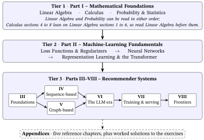

Recommender Systems from Zero
A Hand-Checkable Path from Linear Algebra to Graph- and LLM-Based Collaborative Filtering
A free, hand-checkable, from-zero handbook on recommender systems — a vertical path from linear algebra and calculus through losses, neural networks and the Transformer, to graph- and LLM-based collaborative filtering (LightGCN, contrastive SSL, the spectral view, RLMRec), plus how to train and serve a recommender. Every worked example is reproducible by hand. Open access, CC BY 4.0.
Duong Tan Nghia ![]()
Tran Manh Hoang
Preface
You are reading the live web edition, chapter by chapter; new versions land here first. This is the web edition of Version 2.0 (31 October 2026). To download the full book (PDF) and cite it, use the archived release on Zenodo — doi.org/10.5281/zenodo.20952962, the concept DOI that always resolves to the latest release (CC BY 4.0).
Welcome
This is a handbook about recommender systems — the technology that decides which movie, product, song, or article to put in front of you — written for someone starting from zero. Not “zero recommender-systems knowledge”. Zero machine learning. If you remember a little high-school algebra and you are willing to follow a worked example with a calculator, you have everything you need to begin. Every other idea — a vector, a derivative, a probability, a neural network, an embedding — is built up in front of you, in order, with a picture and a number you can check yourself.
You are here: the Preface (front matter — the part of the book before the chapters). It tells you who the book is for, the two promises it keeps, and how to read it. The chapters follow it, in the order the table of contents lists.
Who this handbook is for
You are the reader if you are any of these:
- a student who wants to understand how modern recommenders really work, not just run ready-made software;
- a working engineer pivoting into recommendation, who needs the foundations and the current state of the art in one place;
- an aspiring researcher who wants the unbroken through-line from the math to the frontier where the field is moving now, which is large language models (LLMs), the text-generating artificial-intelligence (AI) systems behind today’s chatbots, and graphs, here meaning networks of users and items, not plotted curves.
What you do not need: a degree in math, prior machine-learning experience, or a powerful computer. Now and then you will meet a short Python listing (Probability & Statistics for Machine Learning assumes you can read one); you only need to read it, not write it. The worked examples are deliberately tiny — a handful of users and movies, mostly two-dimensional vectors (lists of just two numbers) — so you can check every step by hand. The goal is understanding you can reconstruct, not facts you have to trust.
A standing rule for the complete beginner. The aim of this book is that no symbol, term, or technique is used before it has been explained. If you ever meet one that wasn’t, that is a bug in the book, not a gap in you. This preface keeps the rule in its own way: it is a map, so it names each destination with a gloss of a few words and leaves the full teaching to the chapter that owns it.
The two promises
Each of the sixteen chapters keeps the same two promises, with one scoping: three sections are signposts, not lessons, namely the open-problem list of Large Language Models and Recommendation: the Landscape and the closing “Recent developments (2023–2026)” sections of Self-Supervised & Contrastive Learning and The Spectral / Graph-Filter View, whose numbers sit in their earlier sections. The five appendices are reference material (a catalogue, a recipe, short maps) and carry fewer worked examples. These two promises are the whole method.
Promise 1 — intuition first, and as little unexplained as we can make it. A new idea is introduced with a plain-language intuition and, wherever it helps, why it carries its name, because the history of a name is often the fastest way to remember what it does. You will learn why a sigmoid — a curve that squashes any number into a probability — is “S-shaped”; what the name Transformer, the model design inside today’s LLMs, is usually taken to mean; and why Long Short-Term Memory, a model that reads a sequence one item at a time, is a short memory that lasts. Then every formula is decoded component by component — what each symbol is and what it does — so an equation is never a wall of notation.
Promise 2 — everything is hand-checkable. In a chapter, each concept it teaches carries one fully worked numerical example, small enough to verify with a calculator, and every number in it was checked before it was written down. A worked example with a wrong arithmetic step is worse than none, so the book treats its own numbers as claims to be checked.
Together these serve one aim that matters most for a beginner: understanding that sticks in memory, because you saw the intuition, watched the formula come apart into meaning, and reproduced the number yourself.
How the handbook is organized
The book climbs a ladder of eight parts in three tiers: the mathematics (Tier 1, Part I), the machine-learning basics (Tier 2, Part II) and the recommender systems themselves (Tier 3, Parts III–VIII). After them come five topic appendices and an appendix of worked solutions to the chapters’ exercises. Each tier is a prerequisite for the next, and the picture shows the reading order inside a tier, including the places where you may reorder.
Part I · Mathematical Foundations — the language, in three primers (introductory chapters). Linear algebra gives vectors and the dot product, which is a similarity score. Calculus gives the derivative (a rate of change) and the gradient (the direction of steepest climb), and shows how a model learns by stepping downhill, against the gradient. Probability & statistics gives distributions (how probability spreads over the possible outcomes) and likelihood (how probable the observed data are under a guessed value). It adds Bayes’ rule, for updating a belief when evidence arrives, and the tools to test whether a result is real. Linear Algebra and Probability can be read in either order; Calculus sections 4 to 8 lean on Linear Algebra sections 1 to 6, so read Linear Algebra before them.
Part II · Machine-Learning Fundamentals — the machine. It starts with what a loss function is (one number scoring how wrong the model is) and how a model is trained to make it small. Training gets help from a regularizer, an extra penalty that keeps the model from simply memorizing its training data. Then come neural networks (stacked layers of weighted sums, each passed through a simple bend) and back-propagation (the procedure that works backward from the loss to find which way to nudge each of the network’s adjustable numbers). Last comes representation learning — how a discrete thing (a word, a movie) becomes a vector, called its embedding — up through the Transformer and the LLM.

Parts III–VIII · Recommender Systems — the destination, in six parts:
- Part III · Recommender-System Foundations — the traditional recommenders (scoring by similarity, and matrix factorization, which learns a short list of taste numbers for every user and every item) and how we evaluate them.
- Part IV · Sequence-Based Recommenders — the sequence view: predict the next item from the order of past ones. It climbs from Markov chains (guess the next item from the last one, by counting what usually follows it) and FPMC (Factorizing Personalized Markov Chains, which adds each user’s own taste to that last-item guess). Next comes GRU4Rec, a recurrent network (one that reads a session — one visit’s run of clicks — one step at a time) built from gated recurrent units, or GRUs. Then SASRec (Self-Attentive Sequential Recommendation) and BERT4Rec use self-attention: they weigh every item already in the history to decide what comes next. (BERT, short for Bidirectional Encoder Representations from Transformers, is a text model; BERT4Rec adapts it to recommendation.)
- Part V · Graph-Based Recommenders — the graph view. Here a graph means a network, not a plotted curve: every user and every movie is a dot, and each rating or click is a line joining a user to a movie. It builds LightGCN, a stripped-down graph convolution network (GCN) built on “you are the company you keep”: each user’s vector is rebuilt from the vectors of the movies they watched, and each movie’s from its viewers’. Then come self-supervised learning (SSL) and its contrastive form, in which the model invents its own practice task: two slightly altered copies of the graph must still agree. Last is the spectral, or graph-filter, lens: treat tastes on the graph like a sound signal and keep its smooth, low-frequency part.
- Part VI · The Era of Large Language Models — the four roles an LLM can play in a recommender, and how its knowledge of the world is combined with the pattern of who liked what.
- Part VII · Building a Recommender — training and serving a recommender end to end: the training loop, and the fast path from a user to a ranked list.
- Part VIII · Frontiers — a bounded tour of the field’s edges: click-through-rate (CTR) prediction with deep neural networks, which ranks items by the predicted chance of a click; and bandits and online learning, which learn from each click while the system runs, balancing trying something new against showing a proven favorite.
Tier 3 is not one straight line. The sequence view (Part IV) and the graph view (Part V) each build on Part III rather than on each other, so either can come first; Part VI then draws on both.
After Part VIII come five topic appendices, in this order. Implementation Choices says which ready-made models and software to actually use. Datasets & Benchmarks covers the public datasets that research runs on, and how to split them fairly for training and testing. Generating Features with Large Language Models is a hands-on recipe: an LLM writes a short description of each user and item, a text encoder turns it into a vector, and the recommender takes that vector in. Reinforcement Learning for Recommendation (optimizing long-term reward rather than the next click) and Federated & Privacy-Preserving Recommendation (training without collecting users’ raw data) are short maps of topics the book only points to.
The back of the book also holds Solutions to Exercises: each of the sixteen chapters ends its teaching with a set of by-hand exercises, and this appendix works every one of them out in full.
The through-line: collaborative filtering. The recommender chapters follow one through-line, collaborative filtering (CF): recommend from the pattern of who liked what across many users, rather than from descriptions of the items. If Ann and Bob agreed on the movies they have both seen, Ann will probably like the other movies Bob liked — people who agreed before tend to agree again. That pattern is the collaborative signal.
The recommender families, at a glance. One idea recurs in nearly every chapter — turn things into vectors, score by comparing them, learn the vectors — but it takes many forms. The map below shows the families this book builds, in reading order (the what-kind companion to the ladder above):
| Family | Core idea | Built in |
|---|---|---|
| Content-based | match an item’s features (genre, tags, description) to a user’s profile | Traditional Recommender Systems §2 |
| Memory-based CF: \(k\)-nearest-neighbor (\(k\)-NN) | “users like you also liked…” — score from the \(k\) most similar users or items, the \(k\) nearest neighbors | Traditional Recommender Systems §4 |
| Matrix factorization (MF) | learn user/item embeddings; score by their dot product | Traditional Recommender Systems §5 |
| Sequential / session (a session is one visit’s run of clicks) | predict the next item from the order of past ones | Sequential & Session-Based Recommendation |
| Graph CF | propagate (pass along) embeddings over the user–item graph | From Graphs to LightGCN · Self-Supervised & Contrastive Learning · The Spectral / Graph-Filter View |
| LLM-augmented | fuse a language model’s world knowledge with the collaborative signal | Large Language Models and Recommendation |
| Deep CTR (click-through rate; ranking) | predict a click from rich feature interactions (teenager AND horror film) | Click-Through Rate Prediction & Feature Interactions |
| Bandits / online | choose what to show and learn from the feedback | Bandits & Online Recommendation |
…and how they assemble into a real system. A typical deployed recommender is two-stage (a claim from practice, developed in Training and Serving a Recommender): a cheap retrieval step narrows millions of items to a few hundred, then a richer ranking step orders those. The main families above slot into one stage or the other — which is why the book builds the embedding (retrieval) models first and the feature-rich (ranking) models later:
How to read a chapter
Most chapters follow the same shape, so you generally know where you are:
- The body — concepts built bottom-up, each defined the first time it appears (and, where a name has a real origin, why it is called that), each formula decoded symbol by symbol, and each carrying a small worked example you can check by hand.
- Exercises — by-hand problems that close the teaching, each worked out in full in Solutions to Exercises at the back of the book.
- A closing map — where the chapter fits and what it feeds (a named section in some chapters, folded into the last paragraph in others).
- A glossary — one plain-language line per term the chapter introduces.
- References — every external work checked against a DOI, arXiv or publisher record (each chapter’s reference note says what was read), in author–year (Harvard) form.
- Takeaways — throughout the body, most teaching sections end with a one-sentence In one line (a Takeaway in a few chapters) that restates the point, so you can check that you kept the thread.
Two practical notes. The book comes in two forms built from the same source: a free web edition (minastik.com/recsys) you can read chapter by chapter in a browser, and a typeset edition you can download to read or print. And the table of contents gives the one reading order: the ladder above shows where you may reorder, and the appendices are there to consult when a chapter sends you.
How to actually study it. Read with a pen. When a worked example appears, do the arithmetic yourself before reading the answer. When a formula is decoded, cover the decode and try to name each symbol’s job first. The book is built so that this works — that is the entire point of keeping the numbers tiny.
The one idea that recurs
If you remember nothing else, remember this. It is the spine that runs through nearly all sixteen chapters:
Turn each thing into a vector whose location carries its meaning; score two things by comparing their vectors (a dot product); learn those vectors so the comparisons match reality.
A user is a vector. A movie is a vector. “Will this user like this movie?” is, at heart, how aligned are their two vectors — a single dot product (Part I). For instance, describe tastes and films by two numbers, [romance, action]. Ann loves romance and cares only mildly for action, \([\,2,\,0.5\,]\); the film Vendetta has both, \([\,1,\,1\,]\); a pure action film is \([\,0,\,2\,]\). Multiply matching entries and add: Ann and Vendetta score \(2\times1+0.5\times1=2.5\), Ann and the action film \(2\times0+0.5\times2=1\) — so Vendetta is shown first. Part I explains why this multiply-and-add grows with how aligned two vectors are (and with their lengths; the cosine similarity, which compares only directions, removes the lengths), and Traditional Recommender Systems §5 meets Ann and Vendetta again.
Almost every model in the book is a more powerful way to learn those vectors: from counting co-occurrences (how often two movies are liked by the same people), to matrix factorization, to word2vec (vectors for words, learned from which words appear together), to graph propagation (LightGCN), to a self-supervised second view (the model checks itself against an altered copy of the data), to an LLM’s semantic view (vectors built from what an item’s text means). Same skeleton; better and better embeddings.
What this handbook is not
To stay deep where it matters, the book stays narrow on purpose. It is not a comprehensive textbook of AI and machine learning (ML): it leaves out computer vision (machines that interpret images) and general natural-language processing (machines that handle text), keeping only the representation learning — turning words and items into vectors — that recommenders actually use. Within recommendation it follows one through-line — collaborative filtering, from its classical form to graph- and LLM-based models — and sorts the rest of the field into three bins:
- Covered in full — a part, a chapter or a full section each:
- sequential / session-based recommendation (Part IV; the models introduced above);
- training and serving (Part VII): negative sampling (picking items a user did not click, for the model to rank below the ones they did), the training loop, and the retrieval-then-ranking funnel;
- factorization machines (Traditional Recommender Systems §8): the bridge from matrix factorization to models that use many features of a user and an item;
- deep click-through-rate models (Part VIII): Wide & Deep (a linear part plus a deep network), DeepFM (a deep network plus a factorization machine) and the Deep & Cross Network (DCN), neural networks that learn which combinations of features predict a click — the workhorse of the ranking stage;
- bandits (Part VIII): the explore–exploit balance — try something new, or show a proven favorite? — with the Upper Confidence Bound (UCB) rule and Thompson sampling as two ways to strike it;
- generative recommendation, inside Part VI: the model writes out an item’s semantic ID (identifier), a short code in which similar items share a prefix, using codes learned by a network called an RQ-VAE (residual-quantized variational autoencoder);
- bias, fairness and feedback loops (Evaluation Metrics §12): how skewed data, and a recommender’s own past picks, can tilt what it shows.
- A short pointer appendix each — the framing and the key works, not a full course: reinforcement learning and federated / privacy-preserving recommendation (glossed with the appendices above).
- Out of scope as fields of their own — where the book’s path crosses one of them, it teaches only the tool that step needs and points onward:
- causal / counterfactual recommendation: what would have happened had the system shown something else (met only through its first tools, such as inverse propensity scoring, which reweights each logged click by how unlikely it was to be shown: Evaluation Metrics §12.4, Bandits & Online Recommendation §7);
- context-aware recommendation, which uses the situation, such as time or place;
- conversational recommendation, a dialogue with the user (met where an LLM holds the dialogue itself: Large Language Models and Recommendation §2.4);
- knowledge-graph methods: a web of facts about items, such as who directed what;
- multi-stakeholder settings: balancing users, sellers and the platform (met as fairness to the sellers and creators whose items are shown: Evaluation Metrics §12.5);
- large-scale machine-learning operations (MLOps): keeping models running reliably in production.
A focused ladder you can finish beats an encyclopedia you cannot.